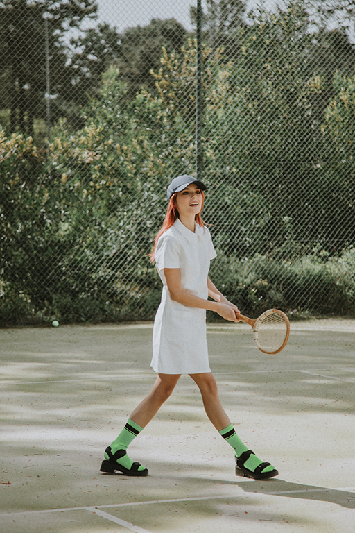

about
 Welcome to my website dedicated to the exciting sport of pickleball! My name is Alice, the creator and owner of this site. As a passionate pickleball enthusiast, I have spent countless hours playing and perfecting my skills on the court. I fell in love with this sport the moment I first picked up a paddle and hit the ball over the net. The fast-paced gameplay, the social aspect, and the friendly competition are just a few of the reasons why I am so enamored with pickleball. Through this website, I hope to share my love and knowledge of pickleball with others. Whether you are a seasoned player or a beginner, this platform is designed to help you improve your game, connect with other pickleball enthusiasts, and stay up-to-date with the latest news and trends in the world of pickleball.
Pickleball has become more than just a hobby for me. It's a way of life. The energy and excitement of the game make it addictive, and I find myself constantly seeking out new opportunities to play. I have made countless friends through the sport, and I am continually impressed by the sense of community that exists within the pickleball world. When I am not playing, I am usually reading up on new techniques, watching videos of professional players, or even just daydreaming about my next game. This website is a reflection of my love for the game and my desire to share that passion with others. I hope that it inspires you to pick up a paddle and give pickleball a try – who knows, you might just fall in love with it too!